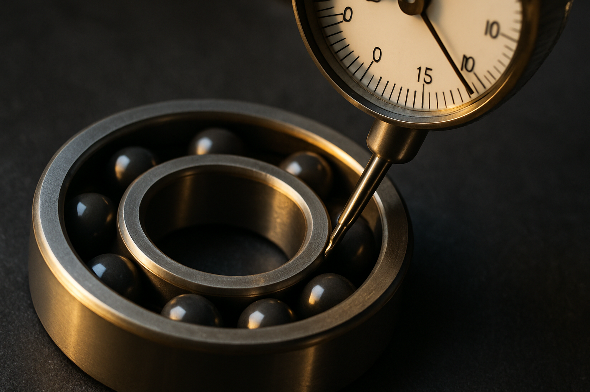

ABEC·P 정밀도 등급이 규정하는 것은 치수 정밀도와 회전 정밀도, 이 두 가지뿐입니다. 소음·진동 레벨, 내부 유격, 볼 소재는 등급표에 아예 없습니다. 그래서 P5를 P4로 올려도 진동 그래프가 그대로인 경우가 생깁니다. 내경 10~18mm 급 기준 등급별 허용값과, 발주서에 등급 대신 적어야 할 4가지를 정리했습니다.

내륜 반경방향 흔들림(Kia) 실측 — 등급표의 숫자가 아니라 이 값이 현장의 진동을 결정한다
박
박정훈 · KTN KOREA 대표
20년 베어링 & 정밀 가공 기술 마이스터. 세라믹·PEEK·STS 특수 베어링 설계·제조, 역설계 2,479건.
포브스코리아 CSV 대상 2026
2.5μm
P4 등급 내륜 흔들림 허용값
±0.001mm
KTN 자체 CNC 가공 정밀도
7일 이내
비표준 형번 제작 납기
인라인스케이트나 낚시 릴 베어링을 검색하면 "ABEC 7"이라는 문구가 가장 먼저 나옵니다. 숫자가 크면 좋은 베어링이라는 게 상식처럼 굳어 있습니다. 그런데 반도체 설비 현장에서는 진동이 잡히지 않아 P5를 P4로 올려 재발주하고, 두 달 뒤 똑같은 진동 데이터를 들고 다시 연락하는 일이 반복됩니다. 단가는 올랐는데 그래프만 그대로입니다. ABEC·P 정밀도 등급은 애초에 진동을 보증하는 규격이 아니기 때문입니다.
베어링 정밀도 등급이 보증하는 항목은 두 가지뿐입니다
국내 검색 결과는 취미용 설명이거나 해외 업체 페이지 자동번역이 대부분이라, 산업용 기준으로 정리된 자료가 드뭅니다. 그래서 등급 숫자만 남고 나머지 조건이 통째로 빠집니다.
ABEC은 미국 ABMA 규격, P급은 ISO 492 기준이고 둘은 서로 대응합니다. P0은 ABEC 1, P6은 ABEC 3, P5는 ABEC 5, P4는 ABEC 7입니다. 두 규격이 규정하는 것은 치수 정밀도(내경·외경·폭 공차)와 회전 정밀도(내외륜 흔들림), 이 두 항목뿐입니다.
내경 10~18mm 급 깊은홈 볼베어링 기준 내륜 반경방향 흔들림(Kia) 허용값은 P0 10μm, P6 5μm, P5 4μm, P4 2.5μm입니다. 한 단계가 대략 1.5~2μm를 줄여 주는 셈입니다.
ISO 492
ABEC
내륜 흔들림(Kia) 허용값
통상 적용
P0 (Normal)
ABEC 1
10μm
일반 구동부
P6
ABEC 3
5μm
감속기·펌프
P5
ABEC 5
4μm
반도체 이송·계측
P4
ABEC 7
2.5μm
스핀들·고속 회전
반대로 정밀도 등급표에 아예 없는 항목이 있습니다. 소음·진동 레벨, 내부 유격(C2·CN·C3), 볼 소재, 리테이너 재질, 그리스 종류입니다. 진동과 소음은 정밀도 등급이 아니라 안데론(Anderon) 값 같은 별도 측정으로 관리합니다. P4는 "덜 흔들리게 깎였다"는 증명서일 뿐, "조립하면 조용하다"는 보증서가 아닙니다.
정밀도 등급을 올려도 진동이 남는 3가지 이유
01
하우징과 축이 못 따라간다
P5 이상은 축 h5, 하우징 H5 수준이어야 합니다. 안 맞으면 P4 정밀도 등급은 서류상 숫자로 남고 회전 정밀도는 하우징이 결정합니다.
02
예압과 유격이 안 맞는다
열팽창이 큰 자리에 CN 유격을 쓰면 운전 중 예압이 과해져 진동과 발열이 함께 올라갑니다. 유격만 C3로 바꿔 해결되는 경우가 많습니다.
목표 회전 정밀도를 μm 단위 실측값으로 적습니다. 그다음 유격 등급 또는 예압량, 볼과 리테이너 소재, 하우징·축의 실측 치수를 함께 넘깁니다. 이 4개가 있으면 등급은 결과로 따라옵니다.
✓
목표 회전 정밀도
허용 흔들림을 μm 단위 실측 목표값으로 명시
✓
유격 등급 또는 예압량
C2·CN·C3 중 어느 것인지, 또는 요구 예압값
✓
볼·리테이너 소재
강볼 / Si₃N₄ / ZrO₂, 리테이너 PEEK 여부
✓
하우징·축 실측 치수
도면값이 아니라 현재 설비의 실측값
구분
일반 유통 업체
KTN
등급 상담
카탈로그 등급 그대로 견적
하우징 실측 → 등급 필요 여부부터 판단
비규격·단종
대응 불가 / 대체품 권유
실물 역설계 2,479건으로 치수 복원
정밀도 근거
수입 완제품 표기 등급
자체 CNC ±0.001mm 가공 이력 제공
납기 / MOQ
재고 없으면 8~16주 / 박스 단위
7일 이내 / 1개부터
KTN은 세라믹 링 연삭, 볼 래핑, 예압 맞춤까지 자체 CNC 라인에서 ±0.001mm로 수행합니다. 20년 정밀 가공 현장을 거치며 굳어진 원칙이 하나 있습니다. 견적보다 하우징·축 실측치를 먼저 받는 것입니다. 등급을 올릴 자리인지 아닌지가 거기서 갈리기 때문입니다. 도면이 없어도 실물 역설계(누적 2,479건)로 치수를 복원해 7일 이내, MOQ 1개부터 제작합니다.
올리는 게 정답인 자리도 분명히 있습니다. 그런 경우라면 굳이 특주하지 않으셔도 됩니다. 표준품을 3~5일에 받는 편이 낫습니다. 다만 표준 등급으로 두 번 실패한 자리라면 다릅니다. ±0.001mm 세라믹 가공은 라인 처리량이 정해져 있어, 긴급 건과 시제품 건을 같은 주에 모두 받지는 못합니다.
자주 묻는 질문
베어링 정밀도 등급 P5와 P4는 실제로 무엇이 다릅니까?
베어링 정밀도 등급 P5와 P4의 차이는 치수 정밀도와 회전 정밀도의 허용 범위입니다. 내경 10~18mm 급 깊은홈 볼베어링 기준으로 내륜 반경방향 흔들림(Kia) 허용값은 P5가 4μm, P4가 2.5μm이며, 한 단계 차이는 약 1.5μm입니다. 다만 두 등급 모두 소음·진동 레벨, 내부 유격, 볼 소재는 규정하지 않습니다. 축과 하우징이 h5·H5 수준으로 확보돼 있지 않으면 P4로 올려도 실제 회전 정밀도는 개선되지 않습니다.
ABEC 등급과 P 등급은 같은 것입니까?
ABEC 등급과 P 등급은 서로 대응하는 다른 규격입니다. ABEC은 미국 ABMA 기준, P급은 ISO 492 기준이며 P0은 ABEC 1, P6은 ABEC 3, P5는 ABEC 5, P4는 ABEC 7에 해당합니다. 규정 항목은 치수 정밀도와 회전 정밀도 두 가지로 사실상 동일합니다. 인라인스케이트나 낚시 릴 제품에 표기된 ABEC 숫자는 산업 설비의 요구 조건과 기준이 다르므로, 설비 발주 시에는 ISO 492 P급과 μm 단위 실측 요구값을 함께 적는 것이 안전합니다.
정밀도 등급을 올렸는데 진동이 그대로인 이유는 무엇입니까?
정밀도 등급을 올렸는데도 진동이 남는 원인은 대체로 베어링 밖에 있습니다. 첫째는 하우징·축 정밀도로, P5 이상을 쓰려면 축 h5, 하우징 H5 수준이 확보돼야 합니다. 둘째는 예압과 내부 유격으로, 열팽창이 큰 자리에 CN 유격을 쓰면 운전 중 예압이 과해져 진동과 발열이 함께 올라갑니다. 셋째는 볼 소재이며, 고주파 진동과 전식은 강볼의 질량·도전성에서 비롯되므로 Si₃N₄ 세라믹 볼 하이브리드가 등급 인상보다 효과적인 경우가 있습니다.
세라믹 베어링도 P4급 정밀도로 제작할 수 있습니까?
세라믹 베어링도 정밀도 등급을 지정해 제작할 수 있습니다. KTN은 ZrO₂ 풀세라믹과 Si₃N₄ 하이브리드 모두 링 내외경 연삭, 볼 래핑, 예압 맞춤까지 자체 CNC 라인에서 ±0.001mm 정밀도로 가공합니다. 표준 형번이 아니거나 도면이 없어도 실물 역설계(누적 2,479건)로 치수를 복원해 제작하며, 납기는 7일 이내, MOQ는 1개부터입니다. 수입 정밀 등급이 재고 없을 때 8~16주 걸리는 것과 비교하면 라인 정지 상황에서 실질적인 선택지가 됩니다.
정밀 베어링 발주 시 등급 외에 무엇을 알려줘야 합니까?
정밀 베어링 발주 시에는 등급 외에 네 가지를 함께 넘기는 것이 좋습니다. 첫째 목표 회전 정밀도를 μm 단위 실측값으로, 둘째 내부 유격 등급(C2·CN·C3) 또는 요구 예압량, 셋째 볼과 리테이너 소재, 넷째 하우징과 축의 실측 치수입니다. 이 네 가지가 있으면 등급은 결과로 따라오고, 등급만 올려 단가를 높이는 시행착오를 줄일 수 있습니다. 진동 데이터가 있으면 등급을 올릴 자리인지부터 판단할 수 있습니다.
무료 견적 요청
규격·수량·사용 환경만 남겨주시면 확인 후 연락드립니다. 제출 내용은 담당자 이메일로 바로 전달됩니다.